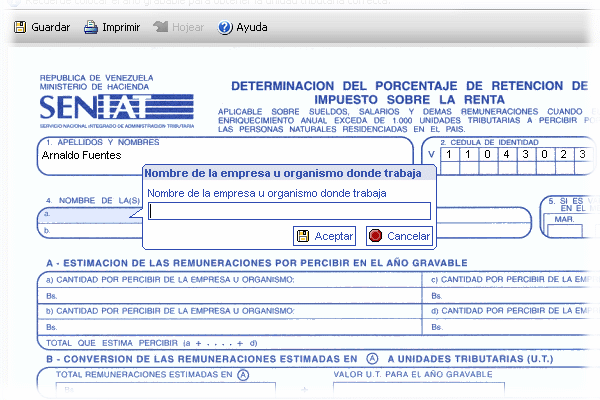
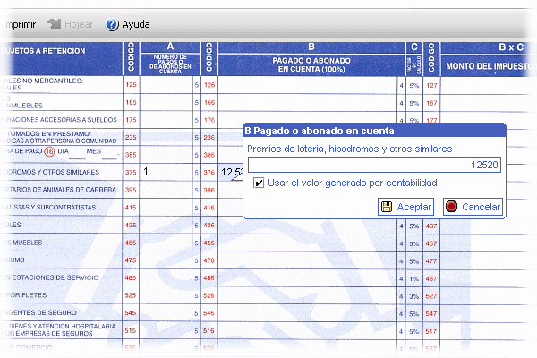

Editor de formas
Esta dialogo de entrada es la interfaz que le permite interactuar con la forma digital cuando esta completando los datos de la declaración fiscal. Aquí puede guardar los cambios, imprimir o hojear. Desplace el puntero del ratón por la superficie de la forma y esta le indicara donde puede colocar valores resaltando la sección bajo el cursor. Haciendo clic sobre ella aparece

El cual le permite colocar los valores para esta sección. Presionando Aceptar, la aplicación automáticamente recalcula toda la hoja para reflejar en tiempo real, la situación de la declaración. Cada sección tiene su propia interfaz de entrada que facilita al usuario el ingreso de los montos correspondientes.
Algunas secciones tienen Usar valor generado por contabilidad. Este le permite tomar la decisión entre usar el valor generado por contabilidad o alterar el valor desmarcando y colocando un valor manual. Esta opción esta habilitada solo cuando se ha detectado transacciones disponibles para esta sección, si no existe ninguna, esta aparece inhabilitada.
A continuación se presenta una posible implementación de los dos tipos básicos de cálculo dentro de las transacciones dentro de una sección.

En este ejemplo, la columna Nro. de pagos o de abono en cuentas y Pago o abono en cuenta (100%) tienen una misma cuenta asociada pero la sección de la primera columna refleja solo la cantidad de transacciones mientras la de al lado, presenta la suma total.
Ver
Contabilidad/Clio
Asignar forma/Contribuyente
Transacciones
Secciones y relaciones